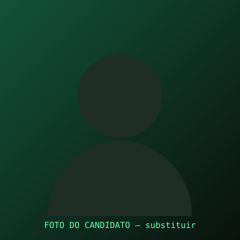
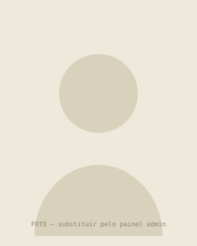

Um de nós, representando a nossa voz.
Há mais de 15 anos dando voz às comunidades, fiscalizando os serviços públicos, denunciando problemas e cobrando soluções para a população. Agora, com essa mesma força, sigo lutando por um DF mais justo.


Uma história de lutas e resultados
Sou Daniel Radar, tenho 43 anos, gestor público, jornalista e estudante de Direito. Sou cristão, casado e pai de 3 filhas. Moro na região Sul do DF e, há mais de 15 anos, estou à frente de um projeto que dá voz às comunidades, fiscaliza os serviços públicos, denuncia problemas e cobra soluções para a população. Como cidadão, e sem mandato parlamentar, construí essa trajetória com muito trabalho, coragem e compromisso com as pessoas. Morador de Santa Maria há mais de 30 anos, filho da dona Mônica, salgadeira, e do saudoso Seu Francisco, porteiro.
Início do Radar Santa Maria e Gama
Projeto comunitário de fiscalização e voz às comunidades.
11.739 votos
Primeiro suplente — a 146 votos de ser eleito para a Câmara Legislativa.
Nossas prioridades para mudar o DF
Propostas sérias, estruturadas e viáveis. Toque em cada ponto do radar para conhecer as causas que guiam nossa caminhada rumo à CLDF.
20 compromissos com você
Não quero apenas pedir seu voto. Quero mostrar pelo que vou lutar. Toque em cada linha para ler o compromisso completo.
Notícias sobre a candidatura
Cobertura recente da imprensa sobre a trajetória e a candidatura de Daniel Radar. Toque em cada card para ler a matéria completa na fonte original.
Mais formas de participar
Um espaço novo, feito para aproximar você da campanha: encontre suas fotos dos eventos, baixe figurinhas e mostre seu apoio nas redes.
Encontre sua foto
Tirou uma foto com o Daniel em algum evento? Encontre o álbum do dia e baixe sua foto em alta resolução.
Encontrar minha fotoFigurinhas do WhatsApp
Baixe o pacote oficial de figurinhas da campanha ou envie a sua própria arte para entrar no pacote.
Ver figurinhasMoldura de apoio
Coloque a moldura oficial "Daniel Radar 70.000" na sua foto de perfil e mostre seu apoio nas redes.
Criar minha molduraGaleria de fotos
Convenção, bastidores, apoios e agenda de rua. Toque em qualquer foto para ampliar — e veja o álbum completo em "Encontre sua foto".
Siga nossa campanha nas redes
Uma campanha transparente se faz compartilhando ideias em tempo real. Escolha sua plataforma favorita e venha debater com a gente.
Venha fazer parte desse movimento de renovação
Entre no grupo de voluntários no WhatsApp ou deixe seus dados que a coordenação entra em contato.
Entrar no grupo de voluntáriosFale com a gente
Dúvidas, sugestões ou imprensa: preencha o formulário abaixo e respondemos o quanto antes.